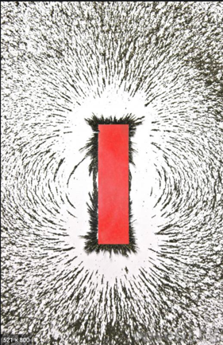

Summary
In this project we are going to implement a simulation of a magnet interacting with particles. Operating in two dimensions, we plan to show how the particles can form shapes and how different magnetic fields affect them.
Problem Description
Magnets have been widely studied in many different areas, with the visualization of magnetic fields being a large basis of understanding. We would like to explore magnets in terms of particles, or iron filings, and demonstrate shapes that different magnetic fields can make through them. We plan to get creative by introducing stencils and allowing the user to upload their own. A possible challenge could be when we introduce more than one magnetic, and we need to look at both how the magnets interact with the particles and how they interact with each other.
Goals and Deliverables
- Our primary goal is to display a 2D simulation of metal shards manipulated by magnetism.
- We plan to allow characteristics of the magnet to be manipulated and altered.
- In addition, we will be able to vary the number of magnets and shards in the simulator.
- Finally, we hope to deliver the ability to sketch out different drawings with the metal shards. And provide the user to input their own sketches.
- In order to determine the accuracy of our magnetic systems, we may use a number of methods, including visual comparison. If we find some formula that we have to approximate for speed, we can compare it to a slower,
much more accurate rendering and calculate the difference.

Example Image
Schedule
- Week 1
- Getting accustomed to 2D graphics.
- Figuring out what graphics library to use.
- Simulating particles.
- Researching what physics are necessary.
- Week 2
- Applying magnetic forces.
- Researching physics and figuring out where to apply formulas.
- Week 3
- Week 4
Resources
- Computer-Generated Iron Filing Art?
by Wonbae Yoon, Namil Lee, Kiwon Um, and JungHyun Han.
- Linux/Unix based platform.
- The CGL library (probably.)
- Google and YouTube.
- Potentially Project 4.